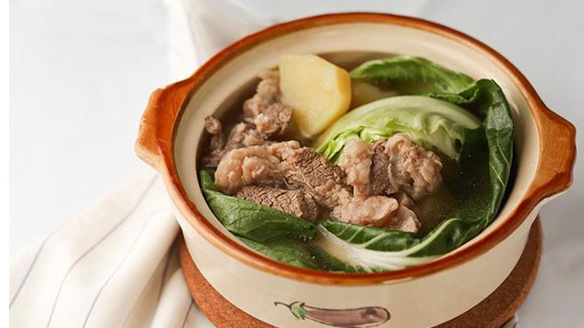

One of the simplest beef soups you can whip up!
In a big casserole, place beef and pour in water. The water level should be just above the meat.Bring to boil and let it simmer for 10 minutes then remove scum (frothy fat) on top while simmering.
Add onions, cover, and simmer for 1 to 1 and 1/2 hours or until beef is tender.
Add more water and potatoes, continue to simmer until potatoes are cooked.
Add peppercorns and fish sauce.
Place the cabbage then the pechay just when you are about to serve. Do not overcook the vegetables. Adjust the taste with salt.